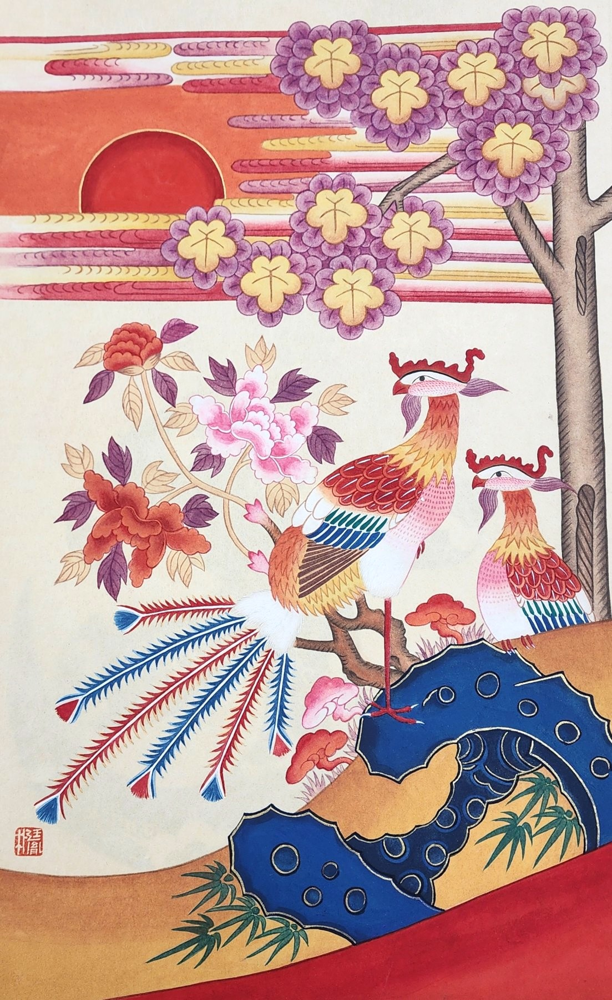

봉황 한 쌍이 화면 가운데를 채우고, 오른쪽 위로는 보랏빛 오동 꽃이 가지마다 매달렸습니다. 왼쪽에서는 붉은 해가 구름띠 사이로 떠오릅니다.
봉황은 어질고 평화로운 시대에만 나타난다는 상상의 새입니다. 오동나무에만 앉고 대나무 열매만 먹는다고 전해져 오동과 대나무를 늘 함께 그리는데, 그 대나무가 이 그림에서도 아래쪽 괴석 곁에 자라고 있습니다.
봉은 수컷이고 황은 암컷이라 반드시 쌍으로 그립니다. 부부의 화합을 뜻합니다.
이 작품 구입을 원하시면 갤러리 데스크로 말씀해 주세요.